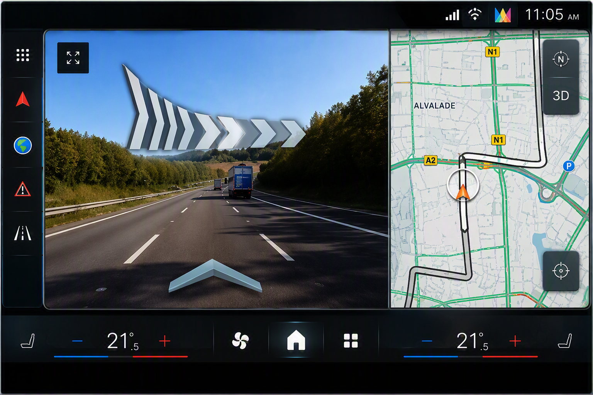
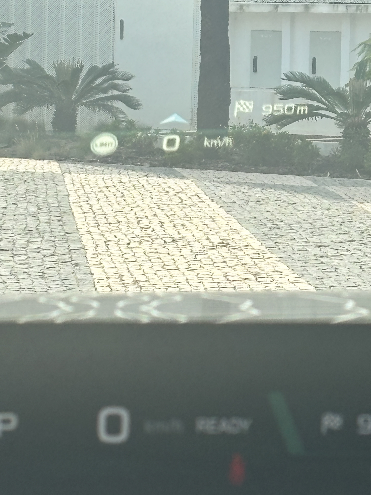

Squad
- Pedro SK
- Frederico RKD
- Cleyde RKD
- Tiago RKD
MyJourney
STING is a focused team delivering augmented driving experiences and guidance-driven display concepts for the next generation of in-vehicle experiences.
Core Team Sting squad and collaboration structure.
High-level overview of the main project areas.


VideoAR brings navigation guidance into an augmented-reality display experience, helping the driver interpret maneuver information in a more intuitive way.

Shud combines driving guidance and navigation context into a unified head-up display experience for situational awareness and driver support.
These links point to internal SharePoint references for deeper review.